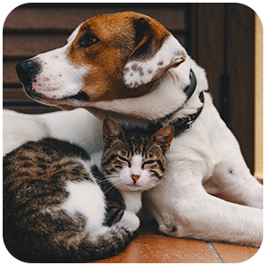

Estamos de cara nova!
A VetMed, renomada clínica veterinária da nossa região, tem o prazer de anunciar suas recentes reformas e melhorias que transformaram completamente o ambiente da clínica. Nosso principal objetivo sempre foi proporcionar cuidados excepcionais para os animais de estimação, e agora estamos entusiasmados em apresentar um espaço completamente renovado e aprimorado. Convidamos todos os nossos clientes e seus queridos companheiros peludos a agendarem uma visita e experimentarem em primeira mão o novo ambiente acolhedor e confortável que criamos.
Ambiente renovado para o conforto e bem-estar dos animais:
Na VetMed, priorizamos o conforto e o bem-estar dos animais durante a sua estadia em nossa clínica. Com base nesse compromisso, realizamos reformas significativas para criar um ambiente acolhedor e tranquilo. As mudanças incluem cores suaves e relaxantes, iluminação adequada e áreas específicas para diferentes espécies, garantindo que cada animal se sinta seguro e relaxado desde o momento em que chega à nossa clínica. Criamos espaços separados para gatos, cães e animais exóticos, a fim de proporcionar um ambiente adaptado às necessidades específicas de cada espécie.

Infraestrutura moderna e aconchegante:
A VetMed investiu em uma infraestrutura moderna e aconchegante para melhor atender a seus pacientes. As áreas de recepção e espera foram projetadas para criar uma atmosfera tranquila e relaxante, com confortáveis assentos para os tutores e áreas de entretenimento para os animais. Além disso, nossas salas de consulta foram equipadas com móveis ergonômicos e tecnologia atualizada, permitindo que nossos médicos veterinários realizem exames e diagnósticos com precisão e eficiência. Também remodelamos nossas áreas de internamento, proporcionando um espaço seguro e higiênico para os animais durante sua estadia conosco.
Equipamentos e tecnologia de última geração:
Na VetMed, estamos comprometidos em fornecer serviços veterinários de alta qualidade, por isso investimos em equipamentos e tecnologia de última geração. Nossos consultórios estão equipados com máquinas de diagnóstico avançadas, permitindo um diagnóstico preciso e rápido. Além disso, adquirimos equipamentos de cirurgia modernos e seguros, garantindo procedimentos cirúrgicos eficientes e bem-sucedidos. Essas melhorias tecnológicas nos permitem oferecer tratamentos especializados e cuidados veterinários de alto nível para nossos pacientes.
Na VetMed, acreditamos que um ambiente acolhedor e moderno é essencial para proporcionar o melhor atendimento veterinário possível. Nossas recentes reformas e melhorias transformaram completamente o ambiente da clínica, criando um espaço confortável e seguro para nossos pacientes e seus tutores. Convidamos você a agendar uma visita para conhecer pessoalmente as mudanças incríveis que fizemos. Nossa equipe dedicada e experiente está pronta para recebê-lo e proporcionar um atendimento de qualidade superior para seu amado animal de estimação. Agende sua visita hoje mesmo e venha ver de perto o novo e aprimorado ambiente da VetMed!